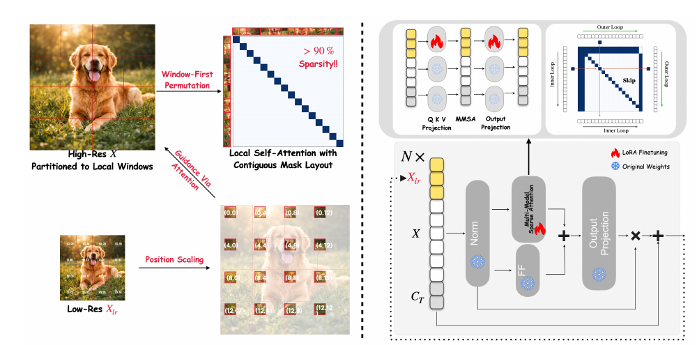
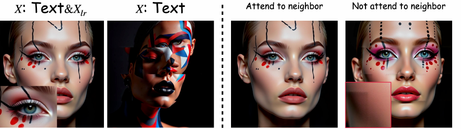
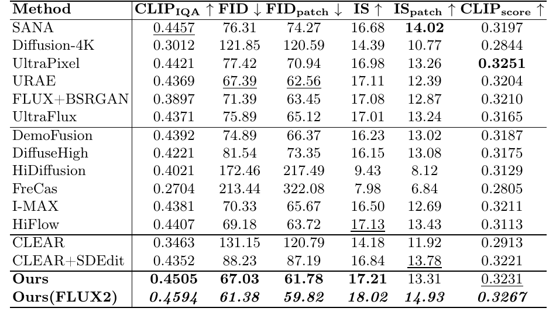
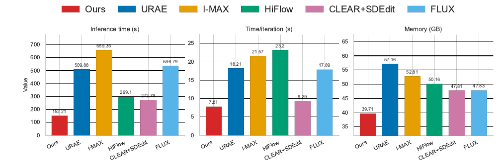
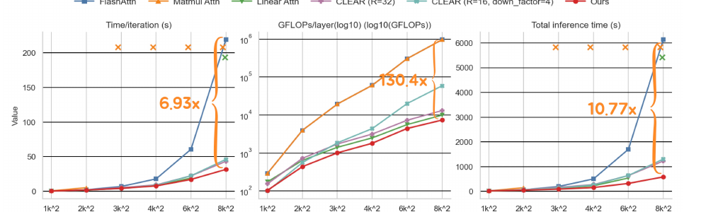

Scale-DiT：Ultra-High-Resolution Image Generation with Hierarchical Local Attention

一句话版本:图还是 65536 个 token,一个不少;省的是「每个 token 要跟多少个 token 算注意力」——从「全图」降到「一个固定大小的窗口」。窗口大小钉死不随分辨率变,于是复杂度从二次掉到近线性。
命名提示:arxiv 摘要页题名为 Scale-DiT,PDF 正文通篇写作 UltraImageGen,官方代码库也叫 UltraImageGen——是同一份工作的不同版本名。另有一篇同期的 arxiv:2510.18775 是视频方向的同名 "UltraGen",勿混。
1. 出发点 (Motivation)
FLUX、SD3 这类 DiT 文生图模型的训练分布基本卡在 2MP(约 1K–2K)以内。想直接生成 4K(4096²)甚至 8K,会同时撞两堵墙:
- 注意力的 O(N²) 墙。 token 数 \(N = H\cdot W\)。从 1024²(4096 token)到 4096²(65536 token),token 数涨 16 倍,注意力成本涨 256 倍——即便有 FlashAttention 也扛不住。
- 数据墙。 高质量 4K/8K 训练图稀缺,原生高分辨率训练(如 Sana、Diffusion-4K)代价高昂,且在缺高清数据的分辨率上质量会退化、对长宽比敏感。
已有的免训练外推路线(DemoFusion、HiFlow、I-MAX 等)绕开了数据问题,但要么继承了沉重的运行时/显存开销,要么在跨窗口的长程一致性上出问题(重复内容、结构断裂)。而做局部注意力的高效方法(CLEAR、STA 等)又往往为了效率牺牲全局一致性,或需要随分辨率不断加大窗口。
Scale-DiT 的主张:直接复用预训练骨干,不改架构、不需原生高分辨率数据,只在注意力块上做三件事——(i) 固定窗口的局部注意力把复杂度压到近线性;(ii) 一路低分辨率引导 + 缩放位置锚点保住全局语义;(iii) 只训 LoRA 完成适配,且训练数据全在 1K 这一档。
latent / token
图先经 VAE 压 16× 成 latent,再切成 patch 展平成 token 序列送进 DiT;1024² 图 → 约 4096 个 token。
窗口注意力
把 token 网格切成固定大小的小块,注意力只在块内算,而不是全图两两算——牺牲部分长程连接换取线性成本。
RoPE
旋转位置编码,靠相对角度告诉模型 token 间的空间距离;分辨率一大,绝对坐标就外推出训练见过的范围,导致失真。
LoRA
只在权重旁挂一对低秩矩阵做微调,冻结原权重;这里只给「处理低清引导」的 Q/K/V 挂,原生生成能力不动。
flow matching
FLUX 系列的训练目标:让网络回归从噪声到数据的速度场 $u_t$,是扩散/整流流的连续时间形式。
block-sparse / SageAttention
把注意力矩阵按 tile 分块,整块被 mask 掉就不计算——真省 FLOPs 而非先算满再乘零。
2. 方法 (Method)
整个方法可以拆成四步,前两步解决「怎么把 token 长度降下来还跑得快」,后两步解决「降下来后怎么不崩全局」。
2.1 固定窗口的局部注意力——复杂度从二次到近线性
把高清 latent \(X \in \mathbb{R}^{H\times W}\) 切成互不重叠的窗口 \(x_i \in \mathbb{R}^{l\times l}\),注意力在每个窗口内独立计算:
—— 翻译:总成本 = 窗口数量 ×(每个窗口内部的注意力成本)。窗口数量正比于 N,而每个窗口的成本 $(l^2)^2$ 是常数(因为 $l$ 固定),所以总成本随 N 线性增长,而不再是 $N^2$。
关键是 \(l\) 钉死不变。论文取 \(l=16\) 个 token(对应 256×256 像素窗口,因 VAE 下采样 16×,256/16=16)。选 16 有个硬件理由:GPU kernel 的 tile 粒度在 128 附近,窗口太小(token 数 < 128)喂不满 kernel,太大又对质量没额外收益。代入 4K:
—— 翻译:每个 query 从「看全图 65536 个 key」降到「看窗口内 256 个 key」,注意力矩阵直接小 256 倍。
为了不让窗口边界出现割裂,还额外放开了相邻窗口的有限跨窗注意力(下面代码的 4-邻窗)。
2.2 窗口优先重排——把稀疏 mask 变成内存连续的稠密块
这是全篇最容易被略过、却决定「稀疏能不能真的跑快」的一步。
默认的行扫描(raster)排列下,同一窗口的 token 在序列里是散开的(隔一整行才接上下一行),对应的窗口内注意力 mask 是一堆零散对角小点,块稀疏 kernel 对这种布局极其低效。解决办法:先按窗口把 token 重排成连续块,于是「窗口内注意力」在矩阵上就是一串贴着对角线的稠密方块,kernel 可以整块跳过 mask 区域。
repo/src/flux/pipeline_tools.py:L310-L326 — 窗口优先重排,把每个窗口的 token 压成内存连续块
```python def window_permutation(H: int, W: int, Wh: int, Ww: int, hierarchical: bool = False) -> torch.Tensor: """ 返回排列 idx,使 x.view(H*W)[idx] 按 window-by-window 重排 (窗口间行扫描,窗口内行扫描)。 """ idx = torch.arange(H * W).reshape(H, W) # unfold 把 (H,W) 切成 (nWh, nWw, Wh, Ww):前两维=窗口坐标,后两维=窗口内坐标 patches = idx.unfold(0, Wh, Wh).unfold(1, Ww, Ww) # (nWh, nWw, Wh, Ww) perm = patches.contiguous().view(-1) # 展平 → 同窗口 token 相邻 return perm ```推理主循环里,latent、位置 id、引导图全部按同一个排列重排,注意力算完再用逆排列还原回图像空间。这样每个窗口都落在一个固定的 256×256 RoPE 位置范围内——正好是预训练时见过的相对范围,不需要把位置编码外推到没学过的尺度。
repo/src/flux/generate2.py:L598-L609 — 用 16×16 窗口重排 HR token,并保存逆排列
```python hr_permutation_idx = window_permutation( H=model_config["image_size"][0] // patch_size, W=model_config["image_size"][1] // patch_size, Wh=16, Ww=16, # 固定 16×16 token = 256×256 像素窗口 ) inv_hr_permutation_idx = inverse_permutation(hr_permutation_idx) # 算完注意力后还原 latent_image_ids = latent_image_ids[:, hr_permutation_idx, ] latents = latents[:, hr_permutation_idx, ] latents_guidance = latents_guidance[:, hr_permutation_idx, ] # 引导图也重排,保持对齐 ```窗口内 mask 的构造(节选):同一窗口 ID 互相可见;做 shifted window 的层再额外放开上下左右 4 邻窗,让信息跨窗口流动(Swin 思路):
repo/src/flux/block2.py:L383-L412 — 窗口内注意力 + 4 邻窗跨窗 mask
```python window_ids = window_h_ids * w_windows + window_w_ids same_window_mask = (window_ids.unsqueeze(1) == window_ids.unsqueeze(0)) # 同窗才可见 # shifted 层:额外放开 4 邻窗(曼哈顿距离 <1),消除边界割裂 if shift_size_H > 0 or shift_size_W > 0: dh = torch.abs(window_h_ids.unsqueeze(1) - window_h_ids.unsqueeze(0)) dw = torch.abs(window_w_ids.unsqueeze(1) - window_w_ids.unsqueeze(0)) window_mask = (dh + dw) < 1 else: window_mask = same_window_mask attention_mask[hi_res_start:hi_res_end, hi_res_start:hi_res_end] = window_mask ```2.3 低分辨率引导 + 缩放位置锚点——保住全局语义
只看局部会「细节清晰但整体乱套」。核心洞察:全局长程依赖主要影响整体结构/布局,对局部细节影响很小。于是另生成一张低清引导图 \(X_{lr}\in\mathbb{R}^{h\times w}\) 提供全局上下文。它的位置索引 \((m,n)\) 按比例 \(\rho=\tfrac{H}{h}\)(经验取 4)放大:
—— 翻译:把低清图的坐标乘 4,投影到高清图的同一空间尺度上;这样每个低清 token 就成了高清画布上一个「锚点」,告诉对应窗口「你这块在大图里该长什么样」。
由此得到的注意力结构:每个高清窗口 attends 到「自己窗口内 + 相邻 token + 对应缩放区域的 \(X_{lr}\)」;\(X_{lr}\) 之间做全局自注意力;文本 token 全局可见。代码里 HR→LR 的对齐块就是按窗口分组连到对应的 LR 窗口:
repo/src/flux/block2.py:L423-L442 — 窗口优先下,把每组 HR 窗口对齐到对应 LR 区域
```python if model_config.get("permute_window_first", False): hi_windows_count = math.ceil(H_p / window_patches_H) * math.ceil(W_p / window_patches_W) lr_windows_count = math.ceil(low_res_len / window_area) group_size_windows = math.ceil(hi_windows_count / lr_windows_count) for i in range(lr_windows_count): hi_win_start, hi_win_end = i * group_size_windows, min((i+1)*group_size_windows, hi_windows_count) hi_res_chunk_start = hi_res_start + hi_win_start * window_area hi_res_chunk_end = hi_res_start + hi_win_end * window_area low_res_window_start = hi_res_end + i * window_area low_res_window_end = min(hi_res_end + (i+1)*window_area, hi_res_end + low_res_len) attention_mask[hi_res_chunk_start:hi_res_chunk_end, low_res_window_start:low_res_window_end] = True # 该组窗口看对应 LR 块 ```位置缩放本身在 transformer 里就是一次乘法(scale_PE):
repo/src/flux/transformer2.py:L220-L222 — 低清引导的位置 id 按 HR/LR 比例放大
```python if model_config.get("scale_PE", False): hr_lr_scale = model_config["image_size"][0] // model_config["joint_denoise_size"][0] low_res_img_ids = low_res_img_ids * hr_lr_scale # ρ = H/h,把 LR 坐标投影到 HR 尺度 ```2.4 参数高效联合去噪——只训 LoRA
把 \(X_{lr}\) 和文本-图像序列拼成 \([C_T, X, X_{lr}]\) 一起过 DiT。但缩放位置索引改变了 RoPE 的频率特性,直接用原权重会失配。解法:只给处理 \(X_{lr}\) 的 Q/K/V 挂 LoRA(\(\tilde Q,\tilde K,\tilde V\)),而高清窗口 \(X\) 仍用原始 \(Q,K,V\)——既学会读全局引导,又不破坏预训练的局部生成能力。统一注意力(省略文本项)为:
—— 翻译:高清 token 用原权重投影、低清引导 token 用 LoRA 投影,拼成一个统一的 Q/K/V,再乘上稀疏 mask $M$ 一次性算完;$M$ 就是 2.2/2.3 里那张「窗口内 + 邻窗 + 对应 LR」的布尔矩阵。
代码里这个「HR 关 LoRA / LR 开 LoRA」的门控是逐次显式切换的:
repo/src/flux/block2.py:L563-L601 — HR 走原权重(LoRA off),LR 引导走 LoRA(on),再拼进统一序列
```python # 高清 token:关掉 LoRA,用原始预训练 Q/K/V,保住局部生成能力 with enable_lora(qkv_modules, False): query, key, value, *_ = _get_qkv_projections(attn, hidden_states, encoder_hidden_states) ... # 低清引导 token:打开 LoRA,用微调后的 Q̃/K̃/Ṽ 适配放缩位置编码 if low_res_guidance is not None: with enable_lora(qkv_modules, True): lr_q, lr_k, lr_v, *_ = _get_qkv_projections(attn, low_res_guidance, None) query = torch.cat([query, lr_q], dim=1) # 拼进统一序列,一次注意力算完 key = torch.cat([key, lr_k], dim=1) value = torch.cat([value, lr_v], dim=1) ```训练目标是带低清引导的 flow matching 速度回归:
—— 翻译:和普通 flow matching 一样让网络拟合速度场 $u_t$,唯一区别是把低清引导 $X_{lr}$ 也作为条件喂进去。$X_{lr}$ 在 256×256 生成,$X$ 在 1K×1K 训练——模型只是在适配一种新注意力模式,不是在学高清新特征,所以不需要原生 4K 数据。
另外推理时还有一个免费加速:低清引导已经编码了全局结构,把它上采样+锐化+加噪到中间时刻 \(t\) 作为高清 latent 的初始化 \(X_{hr}^{t}=\alpha X_T + (1-\alpha)X_t^{ref}\),直接跳过前几步去噪。
消融决策表
| 组件 | 起点 | 消融方向 | 最终选择 | 为什么 |
|---|---|---|---|---|
| 窗口大小 ws | 全图注意力 | 256 / 512 / 1024 | 256 | FID 差异不显著(67.23 vs 66.31 vs 67.83),小窗口最省算力;再小则 token < 128 喂不满 kernel |
| 引导比例 ρ | — | 2 / 4 | 4 | FID 几乎不变,ρ 越大低清图越小、越省;上限受 kernel 粒度约束 |
| 是否看低清 \(X_{lr}\)(Case 1) | 只看文本 | 看文本+\(X_{lr}\) | 看 \(X_{lr}\) | 去掉全局引导 → 多脸/重复等语义割裂(见 Fig. 2) |
| 是否看邻窗(Case 2) | 只看自己窗口 | 放开 4 邻窗 | 看邻窗 | 消除窗口边界接缝,额外成本 < 2% |
| token 排列 | 行扫描 raster | 窗口优先 window-first | window-first | 稀疏 mask 退化成连续稠密块,kernel 才能整块跳过 |
| 位置编码 | 原始 RoPE | 缩放 + LoRA 适配 | 缩放+LoRA | 缩放坐标改了 RoPE 频率,只给 LR 路径挂 LoRA 修正,HR 路径不动 |

3. 实验结果 (Results)
基线与设置。 骨干 FLUX.1-dev;对比 9 个能出 4K 的方法,含训练型(SANA、Diffusion-4K、URAE、UltraFLUX、UltraPixel)和免训练型(DemoFusion、DiffuseHigh、I-MAX、HiFlow、CLEAR+SDEdit)。指标:CLIP-IQA、FID、FID_patch、IS、IS_patch、CLIP Score(1000 条 GPT-4o 生成的 prompt,FID 对 10000 张 LAION-High-Res 真实图)。

质量。 在同样 FLUX.1-dev 底座下,Ours 在 CLIP-IQA / FID_patch / IS 上取得最优,FID 与最好的训练型方法(URAE 67.39)持平——免高清数据却打平了吃 4K 数据训练的方法。GenEval(Table 2)从 1K 到 4K 分数稳定(Overall 0.66→0.67),印证输出质量对分辨率不敏感。

效率与可扩展性。 排除底座 ~32GB 后,本方法只需 7.3GB 额外显存,而朴素 FlashAttention 实现要 15.6GB——省一半多,消费级卡不 offload 就能跑。随分辨率放大的曲线更能说明问题:

配合 FLUX.2-Klein-9B(时间蒸馏 4 步模型),可做到 4K < 30 秒、8K < 2 分钟。
4. 实现细节与工程 (Implementation)
- 底座与微调:FLUX.1-dev + Diffusers;PEFT LoRA,rank = alpha = 16,只挂在 DiT 各块的 Q/K/V 投影上(block2.py:L563-L601)。优化器 Prodigy,lr=1、weight decay 0.01,开 bias correction 与 safeguard warmup。
- 注意力 kernel:实现遵循 FlashAttention-2 + SageAttention 块稀疏。kernel tile 设 Q-block=128、K-block=64(块稀疏 Flash 用 128),匹配 A6000 Ada 上 SageAttention 支持的粒度。实际调用
block_sparse_sage2_attn_cuda整块跳过被 mask 的 tile(block2.py:L36-L54)。 - mask 是预计算落盘的:代码按分辨率把块稀疏 mask 事先算好存成
.pt(如(4096, 4096)..._downsampled_128_test-window.pt),推理时按image_size直接查表加载再上 GPU 缓存(block2.py:L100-L177),避免每步重建稠密 mask 爆显存——这是论文正文没细讲、但对显存很关键的一步工程。 - RoPE 设置:推理时 RoPE 的 NTK factor 设为 10,并关掉 scheduler 的 dynamic shifting(跟随 HiFlow/I-MAX 的做法);低清引导的位置 id 用
scale_PE按 HR/LR 比例放大(transformer2.py:L220-L222)。 - 训练规模:20000 步,2×A6000 Ada(48GB),每卡 batch 1、梯度累积 4 步。微调数据是用 FLUX.1-dev 自生成的 10000 张 1024×1024 图 + 随机高质量 prompt——完全是 commodity 分辨率,无一张原生 4K。评测在单张 RTX Pro 6000 Blackwell(96GB)。
- 递归放大:高清输出可以再作为下一级的低清引导,理论上支持任意大尺度(8K 就是这么外推出来的)。
论文 vs 代码的出入(值得注意):
- 重排方式:arxiv v1 摘要提到用 Hilbert 曲线排序,但公开代码里默认走的是更简单的
window_permutation(窗口内行扫描);hilbert_window_permutation也实现了(pipeline_tools.py:L350),但不是默认路径。两者目的一致(让稀疏退化成连续块),Hilbert 只是局部性更好的可选项。 - 跨窗注意力:论文说「相邻区域的有限跨窗注意力」,代码里对应两条实现——
shifted window(放开 4 邻窗)和一条可选的sliding_window滑窗路径(block2.py:L331-L371),比正文一句话更细。 - 题名不一致:摘要页 Scale-DiT / 正文 UltraImageGen / 代码库 UltraImageGen(见开头命名提示)。
5. 批判与延伸 (Critique)
优点。 思路干净且落地性强:不改架构、不需高清数据、只训 16-rank LoRA,就把预训练 DiT 拉到 8K,且 4K 质量能打平原生 4K 训练的方法。「窗口优先重排让稀疏变稠密块」是真正让稀疏 kernel 跑起来的关键工程,可迁移性很高。
弱点与存疑。
- 长程一致性靠低清图,天花板就是低清图。 全局结构完全由 256×256 的 \(X_{lr}\) 决定,窗口间没有直接的高频交互。若目标图存在跨越大半张画布的精细长程结构(超长文字、连续纹理、镜面对称),低清锚点未必兜得住——论文的定性例子偏向自然场景/人像,这类硬 case 没有正面压力测试。
- 邻窗只放开 1 圈(4-邻)。 边界接缝在 <2% 成本下缓解,但更大范围的跨窗依赖仍被切断;这是「效率 vs 长程」的固定取舍,不是自适应的。
- mask 预计算落盘 = 分辨率被枚举死。 每个目标分辨率都要事先建好对应的
.ptmask,换非常规长宽比就得重新构建,不是任意分辨率即开即用。 - 评测基准是自建的。 1000 条 prompt 由 GPT-4o 生成、FID 对 LAION-High-Res——没有跑公认的标准高分辨率基准,跨论文可比性打折扣。
- FID 绝对值偏高(60+),反映的是「4K 图 resize 到 FID 输入尺寸」这一评测本身的局限,但也说明该指标在此设定下分辨力有限,更多要看 FID_patch 和定性。
延伸阅读 —— 与本站相似工作的交叉验证
本站两篇调研都收录了 Scale-DiT,可交叉印证它在「超高分辨率」与「稀疏注意力」两张地图上的位置:
| 维度 | Scale-DiT(本文) | native-8k-t2i-2026(超高分辨率 T2I 调研) | compensated-sparse-attention-2026(补偿式稀疏注意力调研) |
|---|---|---|---|
| 攻 O(N²) 的角度 | 窗口局部注意力 + 低清全局锚点 | 把它归为「从注意力效率攻 8K」的代表(区别于反演/频域派) | 把它归为图像侧的「局部/窗口化」路线 |
| 8K 是原生还是外推 | 外推(4K 介于原生与免训练之间,8K 明确外推) | 同结论:业界无原生 8K,8K 全靠免训练外推 | 一致:图像侧可零/免训练换窗口注意力跨到 8K |
| 稀疏后要不要补偿 | 不补偿,靠低清引导保全局 | — | 对照点:视频侧因时序一致性要「块稀疏+补偿(SLA/VSA)」甚至微调;图像侧因注意力高秩、无时间冗余,主流是线性化/窗口化,不补偿 |
| 训练成本 | 只训 LoRA,1K 数据 | 属「介于原生和免训练之间」的少数派 | 与 LinFusion 并列为「免训练/轻训练即可换注意力」的图像侧证据 |
分歧成因:三者不矛盾,而是同一事实的三个切面。核心分歧点在「稀疏之后要不要补偿」——compensated-sparse-attention-2026 指出视频扩散因为要维持时间轴一致性,块稀疏后普遍需要补偿分支甚至蒸馏;而 Scale-DiT 所在的图像侧没有时间冗余、注意力更高秩,反而可以「零训练/轻训练直接换窗口注意力」而不崩——这正是它敢只训 LoRA、不加补偿分支的底层原因。
研究启发(可迁移的套路)
重排 > 造 kernel
稀疏能不能跑快,常常不取决于稀疏率,而取决于内存布局。先重排让稀疏退化成连续稠密块,就能直接复用现成块稀疏 kernel——比手写稀疏 kernel 省事得多。
固定窗口 = 锁住外推
把窗口大小钉在预训练见过的 RoPE 范围内,不仅降复杂度,还顺手规避了位置编码外推问题。「效率」和「不外推」是同一个设计的两个红利。
低秩全局 + 高秩局部分工
反直觉点:全局长程依赖其实低秩(只管布局),用一张小图 + 缩放锚点就够;高频细节才需要高分辨率算力。按「谁负责什么」拆分注意力预算,比一视同仁的全注意力高效得多。
只在「变了的那条路径」上挂 LoRA
缩放位置编码只影响 LR 分支,就只给 LR 的 Q/K/V 挂 LoRA,HR 分支原封不动。改动最小化 → 训练最省、原能力不退化。
讨论 / Comments
评论托管在本仓库的 GitHub Discussions, 需 GitHub 账号。